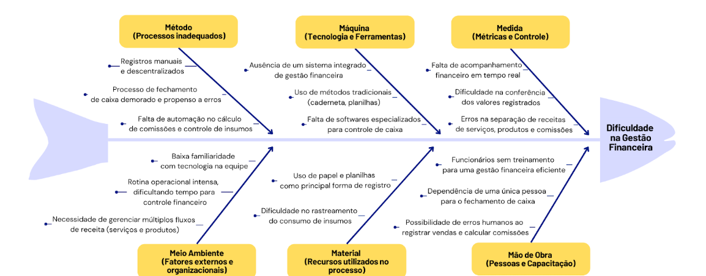

Visão de Produto e Projeto
Cenário Atual do Cliente e do Negócio
Introdução ao Negócio e Contexto
A VSM é uma barbearia localizada em Rio Branco, Acre, com sete anos de atuação no mercado. Sob a gestão de Valder, o estabelecimento conta com uma equipe de cinco funcionários e oferece serviços especializados em cortes de cabelo e barbas, além da venda de produtos para cuidados pessoais. Seu público-alvo é predominantemente masculino, abrangendo clientes de diversas faixas etárias, desde crianças até idosos. Com uma clientela fiel e consolidada, a barbearia busca aprimorar sua gestão interna para tornar seus processos mais eficientes e melhorar a administração do negócio.
Identificação da Oportunidade ou Problema
Atualmente, a gestão financeira das barbearias, especialmente o fechamento de caixa, representa um grande desafio. Além dos serviços prestados, como cortes e barbas, a venda de produtos agrega complexidade ao controle financeiro. O uso de métodos manuais para registrar transações resulta em inconsistências, dificultando a conferência de valores e aumentando o risco de erros. O cálculo do faturamento diário envolve diversos fatores, como serviços realizados, vendas de produtos, custos com insumos e comissões dos funcionários, tornando o processo ainda mais desafiador. Diante desse cenário, este projeto propõe o desenvolvimento de uma solução digital para automatizar cálculos financeiros, organizar registros de vendas e serviços e aprimorar o controle sobre insumos, proporcionando uma gestão mais eficiente e auxiliando na tomada de decisões estratégicas. A seguir, o Diagrama de Ishikawa ilustra os principais fatores que contribuem para a dificuldade na gestão financeira e no fechamento de caixa da barbearia:

A Barbearia VSM enfrenta desafios operacionais significativos, especialmente no controle financeiro e na organização dos atendimentos. O fechamento de caixa é realizado manualmente ao final de cada semana, o que gera desorganização e dificulta a consulta dos registros diários de cada barbeiro, impactando a eficiência da gestão, além de demandar tempo e esforço, expondo a possíveis erros. Esses desafios evidenciam a necessidade de uma solução digital que otimize a administração financeira e a organização interna da barbearia.
Segmentação de Clientes
A solução será utilizada exclusivamente pela equipe da VSM, incluindo o proprietário e os funcionários da barbearia. Assim, os principais perfis de usuários do sistema podem ser segmentados da seguinte forma: Proprietário/Gerente (37 anos): Responsável pela administração geral da barbearia, incluindo a gestão financeira e pagamento de comissões. Necessita de um sistema que forneça uma visão ampla e detalhada do faturamento, custos e desempenho do negócio;
Barbeiros/Funcionários (20-45 anos): Profissionais que realizam os atendimentos e recebem comissões sobre os serviços prestados e produtos vendidos. Precisam de uma interface intuitiva para acompanhar sua agenda, registrar vendas e verificar informações essenciais para o dia a dia de trabalho;
Solução Proposta
Objetivos do Produto
O objetivo é desenvolver uma solução digital, acessível por meio de plataformas web e mobile, voltada à otimização da gestão interna da Barbearia VSM, com foco no fechamento de caixa e na organização financeira. A proposta busca aumentar a eficiência administrativa do estabelecimento, por meio da redução de erros manuais, da facilitação do controle financeiro e do aprimoramento da gestão de atendimentos e vendas. Além disso, pretende-se promover maior transparência nas atividades internas e oferecer suporte à tomada de decisões por meio de dados estruturados e organizados.
Características da Solução
A solução proposta contará com as seguintes funcionalidades para otimizar a gestão interna da Barbearia VSM: Calendário para funcionários: Proporcionará maior transparência na visualização dos atendimentos agendados, facilitando a organização da rotina e evitando conflitos de horários;
Calendário para administrador: Permitirá ao administrador visualizar os atendimentos de todos os barbeiros, além de possibilitar a atribuição direta de clientes a um profissional específico, otimizando a distribuição da demanda.
Fechamento de caixa automatizado: Resolverá um dos principais desafios da barbearia, eliminando a necessidade de cálculos manuais no final da semana. O sistema consolidará automaticamente todas as movimentações financeiras, garantindo mais precisão e agilidade no processo.
Gestão de vendas e serviços: Todos os registros de vendas e serviços serão armazenados e vinculados diretamente a cada funcionário, substituindo as anotações manuais e proporcionando um controle mais eficiente e acessível das transações. Essas funcionalidades garantirão maior organização, transparência e eficiência operacional, reduzindo erros e facilitando a administração da barbearia.
Tecnologias a Serem Utilizadas
Para o desenvolvimento da solução proposta, serão utilizadas as seguintes tecnologias: Desenvolvimento da Aplicação: React Native: Framework para desenvolvimento do aplicativo mobile, garantindo compatibilidade com diferentes plataformas.
Tailwind CSS: Possível uso para estilização do aplicativo, proporcionando um design moderno e responsivo.
Django: Framework backend baseado em Python, responsável pelo gerenciamento de dados, regras de negócio e segurança da aplicação.
MySQL: Sistema de gerenciamento de banco de dados relacional, utilizado para armazenar e organizar os dados da aplicação de forma estruturada, permitindo consultas eficientes e seguras. Desenvolvimento do Protótipo: Figma: Ferramenta principal para a criação de protótipos de baixa e alta fidelidade, permitindo a validação antecipada do design da interface.
Canva: Alternativa para criação de materiais visuais complementares.
Excalidraw: Ferramenta para diagramas e wireframes simples, facilitando a concepção inicial da interface.
Pesquisa de Mercado e Análise Competitiva
Atualmente, existem diversas soluções voltadas para o setor de barbearias, como InBarber, BarberApp e BestBarbers. No entanto, a maioria desses aplicativos foca na interação entre o barbeiro e o cliente, oferecendo funcionalidades como agendamento online, lembretes de atendimento e fidelização. Embora essas soluções sejam úteis para a gestão do relacionamento com os clientes, elas não atendem integralmente às necessidades operacionais internas da barbearia. A solução proposta se diferencia ao ser desenvolvida especificamente para a gestão interna do negócio, com foco na organização financeira e na otimização de processos administrativos, como o controle de fluxo de caixa, registro de vendas e serviços, acompanhamento de despesas operacionais e cálculo de comissões. Os principais diferenciais incluem: Gestão financeira integrada: O sistema auxiliará no fechamento de caixa, considerando serviços prestados, vendas de produtos, comissões dos funcionários e custos operacionais.
Controle interno aprimorado: Diferente das soluções existentes, que priorizam a experiência do cliente final, o aplicativo será voltado exclusivamente para a equipe da barbearia, proporcionando maior controle sobre os registros financeiros e operacionais.
Facilidade na distribuição de comissões: O cálculo automático de comissões para os funcionários garantirá maior transparência e reduzirá erros manuais.
Dessa forma, a nova solução visa preencher uma lacuna no mercado ao oferecer uma ferramenta especializada para a administração interna da barbearia, trazendo mais eficiência e organização para o dia a dia do negócio.
Análise de Viabilidade
A solução proposta é viável, pois não apresenta requisitos excessivamente complexos e pode ser desenvolvida dentro do prazo estipulado, com conclusão prevista para 17/07/2025. Além disso, a equipe possui conhecimento nas tecnologias escolhidas para o desenvolvimento, garantindo maior eficiência na implementação. Para o desenvolvimento da solução, serão utilizadas tecnologias consolidadas no mercado, como React Native para a aplicação mobile, Django para o backend e Figma para a prototipação da interface, assegurando um fluxo de trabalho ágil e eficiente. A solução será essencial para a gestão da barbearia, tornando-se a principal ferramenta de registro e administração interna. Seu custo financeiro será reduzido, limitando-se à hospedagem do sistema, o que reforça sua viabilidade e sustentabilidade a longo prazo.
Impacto da Solução
A implementação do sistema de gestão interna trará uma transformação significativa na rotina administrativa da Barbearia VSM. Com a digitalização dos registros, espera-se que Valder e sua equipe substituam completamente a caderneta física, eliminando problemas como perda de informações, erros de anotação e falta de padronização nos registros de atendimentos e vendas. Além disso, a automatização do fechamento de caixa proporciona maior precisão e agilidade no controle financeiro, eliminando a necessidade de cálculos manuais e reduzindo o risco de inconsistências. Isso permitirá que Valder economize tempo, direcionando seu foco para a gestão estratégica do negócio e a melhoria dos serviços oferecidos. O sistema também oferecerá uma visão mais clara da movimentação financeira, facilitando a tomada de decisões baseadas em dados concretos. A organização dos registros de vendas e serviços possibilitará um controle mais eficiente sobre os produtos comercializados e os insumos utilizados, auxiliando na gestão de estoque e na precificação adequada dos serviços. Dessa forma, a solução não apenas otimizará a operação diária da barbearia, mas também contribuirá para o crescimento sustentável do negócio.
Estratégias de Engenharia de Software
Estratégia Priorizada
Abordagem de Desenvolvimento de Software: A abordagem escolhida para o desenvolvimento da solução será a Híbrida, combinando elementos das filosofias dirigida por plano (como a definição antecipada de requisitos e a ênfase na previsibilidade do escopo) e ágil (como a adaptação contínua e a colaboração direta com o cliente). Essa escolha se alinha às particularidades do projeto da Barbearia VSM, que conta com requisitos iniciais bem definidos, mas também com a forte disponibilidade do cliente, o que permite um ciclo constante de validação e de adaptação contínua às necessidades identificadas ao longo do desenvolvimento. A previsibilidade é alcançada pela organização dos requisitos desde o início, o que viabiliza um planejamento claro e estruturado. A flexibilidade, por sua vez, será assegurada pela abertura a ajustes ao longo do desenvolvimento, baseada em interações frequentes com o cliente, além da priorização de funcionalidades em entregas incrementais.
Ciclo de Vida: O ciclo de vida selecionado é o Iterativo e Incremental, pois permite o desenvolvimento gradual da solução por meio de entregas parciais, funcionais e evolutivas. Cada incremento será validado junto ao cliente, permitindo a identificação prévia de desvios, a correção contínua de problemas e a adaptação do produto às reais necessidades do negócio. Esse modelo favorece o alinhamento entre a solução desenvolvida e as expectativas do usuário final, ao mesmo tempo em que reduz o risco de retrabalho por falhas de entendimento.
Processo de Engenharia de Software: O processo de engenharia de software adotado será dividido em duas fases complementares, numa combinação entre o RAD e o OpenUP. O RAD será aplicado na fase inicial do projeto, com foco em prototipação rápida de interfaces e fluxos principais, além da validação visual direta com o cliente. Essa abordagem será essencial para refinar os requisitos já conhecidos, testar alternativas de interação e facilitar o entendimento mútuo entre equipe e cliente por meio de representações visuais informais. A alta disponibilidade do cliente será aproveitada para obter feedback frequente e antecipar decisões críticas do projeto. Após a validação dos principais fluxos, o projeto avançará com o OpenUP, um processo leve, interativo e disciplinado, que oferece papéis bem definidos, ênfase em engenharia de requisitos e suporte ao desenvolvimento incremental orientado a histórias de usuário. Essa fase permitirá manter a rastreabilidade das decisões, garantir a qualidade progressiva do produto e organizar as entregas de forma estruturada, sem comprometer a adaptabilidade necessária para responder a mudanças pontuais durante a execução.
Quadro Comparativo
A seguir, apresenta-se um quadro comparativo entre dois processos de desenvolvimento de software considerados para o projeto: o RAD, focado na agilidade e prototipação rápida, e a abordagem híbrida RAD + OpenUP, que combina a validação visual com desenvolvimento estruturado.
| Características | RAD | RAD + OpenUP |
|---|---|---|
| Abordagem Geral | Ênfase na prototipação rápida e iterativa. Foco principal no Design Centrado no Usuário. | Mantém a prototipação rápida do RAD, com desenvolvimento incremental e estrutura leve do OpenUP. |
| Estrutura de Processos | Planejamento formal seguido de ciclos rápidos; requisitos de alto nível; protótipos iterativos. | Mesmo fluxo do RAD, porém com entregas incrementais que validam o valor entregue ao usuário a cada iteração. |
| Colaboração com o Cliente | Participação ativa do cliente durante todo o processo; feedback contínuo e ajustes rápidos. | Contato contínuo com o cliente, validação de protótipos e incremento de valor em cada entrega. |
| Flexibilidade de Requisitos | Requisitos são tratados como variáveis; mudanças são facilmente incorporadas. | Flexibilidade mantida, mas com gestão de mudanças dentro de ciclos iterativos e rastreamento mais estruturado. |
| Ciclo de Vida do Projeto | Rápido e voltado à entrega funcional em pouco tempo. | Estruturado com micro-incrementos: ciclos curtos (iterações) e visão de longo prazo (ciclo de projeto). |
| Complexidade do Processo | Processo dividido em 4 fases, com foco na prototipação e no envolvimento do usuário. | Mesmas 4 fases, com maior apoio à transição e construção final, promovendo gerenciamento de risco. |
| Práticas de Desenvolvimento | Ênfase em ferramentas CASE e geração de protótipos; documentação mínima | Uso das mesmas ferramentas com organização adicional; camadas de micro-incrementos e documentação enxuta. |
| Adequação ao Cliente | Ideal para usuários com baixa familiaridade com tecnologia, pois incentiva o aprendizado prático. | RAD ajuda na familiarização inicial; OpenUP estrutura o avanço com governança leve e foco em valor contínuo |
Justificativa
A integração dos processos OpenUP e RAD visa unir o melhor de duas abordagens ágeis para atender às necessidades específicas do projeto. O RAD, com seu foco em prototipação rápida e feedback contínuo do usuário, é ideal para as fases iniciais do projeto. Essa abordagem permite que os usuários visualizem e interajam com protótipos funcionais desde o início, facilitando a validação de requisitos e promovendo um entendimento mais claro do produto final. Além disso, o envolvimento ativo dos usuários desde as primeiras etapas contribui para a redução de riscos e aumenta a satisfação do cliente. À medida que o projeto avança, a adoção do OpenUP proporciona uma estrutura iterativa e incremental, mantendo a flexibilidade necessária para adaptações, mas com uma governança leve que assegura a qualidade e a consistência do desenvolvimento. Sua abordagem pragmática e colaborativa garante que as entregas sejam alinhadas aos objetivos do negócio, promovendo uma evolução contínua do software. Portanto, a combinação de RAD e OpenUP permite iniciar o desenvolvimento com rapidez e foco no usuário, enquanto se mantém uma estrutura sólida e adaptável para as fases subsequentes, garantindo entregas de valor contínuas e alinhadas às expectativas do cliente.
Cronograma e Entregas
Esse tópico define as principais etapas e prazos do projeto, garantindo a entrega pontual e dentro do escopo estabelecido.
| Fase/Processo | Data Início | Data Fim | Objetivo Principal | Entregas Esperadas | Validação com o Cliente |
|---|---|---|---|---|---|
| RAD | 01/04/2025 | 25/04/2025 | Compreensão do problema, elicitação de requisitos e descoberta e definição do escopo. | Documento de Visão do Produto e Projeto, primeiros requisitos levantados | Reunião de alinhamento; validação da visão e escopo com cliente |
| RAD | 26/04/2025 | 05/05/2025 | Criação e validação de protótipos com foco em calendário e fluxo de caixa | Protótipos de baixa/média fidelidade validados; fluxos simulados; início da definição de critérios de aceitação (DoR) | Feedback visual do cliente; validação dos fluxos principais |
| OpenUP - Iteração 1 | 06/05/2025 | 20/05/2025 | Implementar login e cadastro | Funcionalidade de autenticação com testes automatizados, documentação técnica e critérios de aceitação definidos (DoD) | Demonstração funcional; validação da história de usuário e testes |
| OpenUP - Iteração 2 | 21/05/2025 | 03/06/2025 | Desenvolver módulo de calendário (funcionário + administrador) | Visualização de agendamentos por profissional, atribuição de atendimentos; critérios de aceitação aplicados | Demonstração completa de fluxo de agendamento; validação com base nos critérios (DoD) |
| OpenUP - Iteração 3 | 04/06/2025 | 18/06/2025 | Implementar fechamento de caixa automatizado e vinculação de vendas e serviços | Módulo de caixa com cálculo de comissões e receitas; registros vinculados a profissionais; testes automatizados | Validação com dados simulados; checklist de DoR e DoD |
| OpenUP - Iteração 4 | 19/06/2025 | 30/06/2025 | Integração geral, ajustes finais e preparação para entrega | Sistema funcional integrado, documentação atualizada, revisão da experiência do usuário | Checklist final de critérios de aceitação; validação completa do sistema |
| Finalização/Apresentação | 01/07/2025 | 15/07/2025 | Finalizar o projeto, documentar e apresentar resultados | Produto estável e completo, documentação final, apresentação do sistema | Validação formal do cliente; feedback final |
Interação entre Equipe e Cliente
Composição da Equipe
Conforme detalhado na tabela a seguir, são apresentados os papéis e responsabilidades de cada integrante da equipe.
| Papel | Descrição | Responsável | Participantes |
|---|---|---|---|
| Desenvolvedor Frontend | Responsável pela interface gráfica do sistema, garantindo a interação eficiente e acessível do usuário com a aplicação. | Weverton Rodrigues | Felipe Henrique |
| Desenvolvedor Backend | Responsável pela implementação da lógica de negócio, integração com o banco de dados e desenvolvimento de serviços e APIs da aplicação. | Caio Sabino | Caio Melo, Felipe de Aquino |
| Modelador de Dados | Responsável pela modelagem conceitual, lógica e física do banco de dados utilizado na aplicação. | Caio Melo | |
| Gerente de Projeto | Coordena as atividades do projeto, realiza o acompanhamento de prazos, garante a comunicação com o cliente e facilita a organização interna da equipe. | Vinicius Rufino | Weverton Rodrigues, Caio Sabino |
| Analista de Requisitos | Responsável pela elicitação, documentação e validação dos requisitos funcionais e não funcionais do sistema junto ao cliente. | Vinicius Rufino | Caio Melo, Caio Sabino, Felipe de Aquino, Felipe Henrique, Weverton Rodrigues |
Comunicação
Nesse tópico iremos apresentar as ferramentas e métodos a serem usados pela nossa equipe durante todo o desenvolvimento do projeto. Além de como será feita a comunicação entre os membros da nossa equipe.
Ferramentas de Comunicação
- Google Meet: Ferramenta responsável pela interação com o cliente, a fim de obter uma comunicação efetiva e didática, com transmissão de tela.
- Discord: Ferramenta de comunicação entre membros, a fim de desenvolver o projeto em conjunto, envio de links e documentos importantes.
- Whatsapp: Comunicação diária entre os membros do grupo, interação com o cliente a fim de marcar/confirmar reuniões.
- Microsoft Teams: Gravação de apresentações de final de unidade.
Métodos e Frequência de Reuniões
- Reuniões com o cliente: Realizadas quinzenalmente, via Google Meet, com o objetivo de apresentar entregas parciais, validar funcionalidades, revisar protótipos e coletar feedback, valorizando a participação ativa do cliente e prevê validações frequentes durante o desenvolvimento.
- Reuniões internas da equipe: Ocorrerão semanalmente, utilizando o Discord, para o planejamento, acompanhamento das tarefas em andamento, discussão de dificuldades e organização das próximas entregas.
- Comunicação Assíncrona Diária: Realizada via Whatsapp, garantirá agilidade na tomada de decisões, reforçando a colaboração e o fluxo contínuo de informações.
Processo de Validação
Nessa seção foram decididos quais serão os processos de validação do produto antes de sua implementação final. Visando atender às expectativas do cliente com excelência.
Definition of Ready(DoR): Conjunto de critérios que assegura que uma funcionalidade ou requisito identificado possua informações claras, está bem compreendido pela equipe e estimado de forma adequada, estando pronto para ser desenvolvido. Esses critérios reduzem ambiguidades e contribuem para um avanço mais fluido e eficaz do time durante o ciclo de desenvolvimento.
- História de usuário bem escrita
- Critérios de aceitação claros
- Design pronto
- Testes automatizados
- Documentação prévia
Definition of Done(DoD): Trata-se de um conjunto de critérios objetivos que estabelece quando uma funcionalidade implementada ou incremento de produto pode ser considerado completamente finalizado. Esses critérios geralmente envolvem a aprovação nos testes previstos, a devida atualização da documentação associada e a revisão de código. A não conformidade com esses requisitos implica que a entrega não deve ser considerada concluída nem liberada para uso.
- Código revisado
- Cobertura de testes
- Documentação atualizada
- Funcionalidade integrada e testada em ambiente adequado
Lições Aprendidas - Unidade 01
- Definir efetivamente o ciclo e metodologia utilizada no começo
Dificuldade: A equipe teve dificuldade na identificação do processo de desenvolvimento ideal para o contexto do projeto, o que causou um atraso na definição da estratégia.
Lição aprendida: É importante alinhar o ciclo de vida e a abordagem desde o começo do projeto, para garantir fluidez nas decisões e sucesso no projeto.
- Alinhar expectativas com o cliente
Dificuldade: Como o cliente possui pouco conhecimento técnico, houve dificuldades iniciais de comunicação, superadas rapidamente com a adaptação da linguagem da equipe e a apresentação de imagens de aplicativos semelhantes, que facilitaram a compreensão do escopo e das funcionalidades da solução.
Lição aprendida: Tal ação é importante para não gerar atrasos de mudança de curso e escopo mal definidos.
- Melhor compreensão de problema
Dificuldade: No início, a equipe partiu de suposições sobre o funcionamento da barbearia. Foi necessário realizar reuniões com o cliente e revisar o entendimento inicial para se aproximar da realidade dele.
Lição aprendida: Investir mais tempo na fase de entendimento de problema e elicitação de requisitos, para que o projeto possa correr de forma efetiva e sem percalços.
- Comunicação interna da equipe
Dificuldade: A equipe identificou a necessidade de padronizar os canais de comunicação e marcar reuniões de acompanhamento com frequência regular, tendo em vista que houve momentos de desencontro na divisão de tarefas, o que impactou o andamento de algumas entregas.
Lição aprendida: A comunicação constante e organizada entre os membros da equipe é essencial para manter o andamento e evitar desalinhamentos do projeto.
Bibliografia
- MARSICANO, George. Requisitos de Software: Fundamentos, Evolução e Práticas. Versão 0.2, Draft. Atualizado em: 11 abr. 2025.
Referências Bibliográficas
- BARBERAPP. Disponível em: https://play.google.com/store/apps/details?id=com.softwareline.barbier. Acesso em: 02 abr. 2025.
- BESTBARBERS. Disponível em: https://play.google.com/store/apps/details?id=bestbarbers.app. Acesso em: 02 abr. 2025.
- CANVA. Canva. Disponível em: https://www.canva.com/. Acesso em: 02 abr. 2025.
- DISCORD INC. Discord. Disponível em: https://discord.com/. Acesso em: 02 abr. 2025.
- DJANGO SOFTWARE FOUNDATION. Django Documentation. Disponível em: https://docs.djangoproject.com/en/stable/. Acesso em: 02 abr. 2025.
- EXCALIDRAW. Disponível em: https://excalidraw.com/. Acesso em: 02 abr. 2025.
- FIGMA. Figma. Disponível em: https://www.figma.com/. Acesso em: 02 abr. 2025.
- GOOGLE LLC. Google Meet. Disponível em: https://meet.google.com/. Acesso em: 02 abr. 2025.
- INBARBER. Disponível em: https://play.google.com/store/apps/details?id=com.inbarberapp.schedule.twa. Acesso em: 02 abr. 2025.
- META PLATFORMS, INC. React Native Documentation. Disponível em: https://reactnative.dev/docs/environment-setup. Acesso em: 02 abr. 2025.
- META PLATFORMS, INC. WhatsApp. Disponível em: https://www.whatsapp.com/. Acesso em: 02 abr. 2025.
- TAILWIND. Tailwind CSS Documentation. Disponível em: https://tailwindcss.com/docs. Acesso em: 02 abr. 2025.
- Introduction to OpenUP (Open Unified Process). Disponível em: https://dl.icdst.org/pdfs/files4/3e712cc222ca9f7489f4cc49e3642f09.pdf . Acesso em: 21 abr. 2025.
- Rapid Application Development Model (RAD) - Software Engineering. Geeks For Geeks. Disponível em: https://www.geeksforgeeks.org/software-engineering-rapid-application-development-model-rad/. Acesso em: 21 abr. 2025.
Histórico de Revisão
| Data | Versão | Descrição | Autor |
|---|---|---|---|
| 02/04/2025 | 0.0 | Criação do Documento | Vinícius Rufino e Weverton Rodrigues |
| 02/04/2025 | 0.1 | Produção dos Tópicos 1 e 2 | Vinícius Rufino e Weverton Rodrigues |
| 03/04/2025 | 0.2 | Revisão e correção de erros | Vinícius Rufino |
| 11/04/2025 | 0.3 | Correção após feedbacks do professor | Weverton Rodrigues |
| 18/04/2025 | 1.0 | Finalização do Documento | Todos |
| 20/04/2025 | 1.1 | Atualização no Tópico 3.2 e 3.3 | Vinícius Rufino |
| 20/04/2025 | 1.2 | Atualização do tópico 3.1 | Weverton Rodrigues |
| 20/04/2025 | 1.3 | Inserção do Tópico 4, 5 e 6.1. | Caio Sabino |
| 21/04/2025 | 1.4 | Refatoração dos Tópicos 3.2, 3.3, 5.2 e 5.3, 8. | Vinícius Rufino |